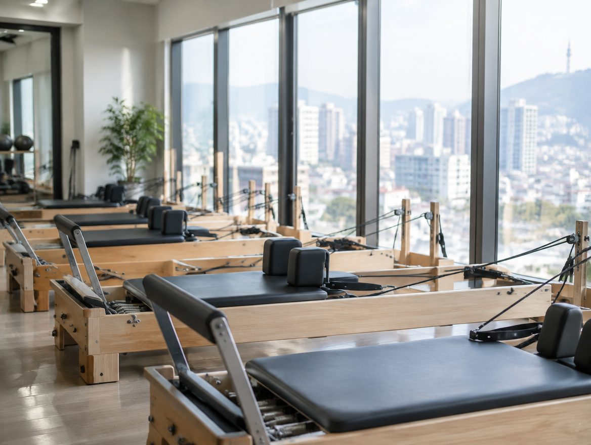

프로그램 안내
시간 별도 문의
FIND YOUR PRACTICE
운동 경험에 맞는 시작

PROGRAM NOTE나의 움직임을
나의 움직임을
이해하는 시간
운동 경험과 목표를 듣고 진행 방식을 상담하는 개인 레슨 안내 안내입니다 지도 범위와 담당자는 상담에서 확인합니다
WEEKLY RHYTHM
운동을 일상에 놓는 방법
수업 요일과 운영 시간, 예약 조건을 확인하고 생활의 리듬에 맞는 일정을 찾아보세요
레슨 일정 상담
정원 별도 문의
프로그램 안내
시간 별도 문의
레슨 일정 상담
정원 별도 문의
프로그램 안내
시간 별도 문의
YOUR FIRST DAY처음에는,
처음에는,
이것만 준비하세요
운동 경험과 원하는 수업 방식, 방문 가능한 시간을 정리합니다 복장과 준비물은 시설 안내에 따라 확인해야 합니다